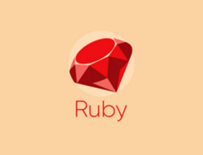

Ruby:

Ruby is an interpreted, high-level, general-purpose programming language. It was designed and developed in the mid-1990s by Yukihiro "Matz" Matsumoto in Japan. Ruby is dynamically typed and uses garbage collection and just-in-time compilation. It supports multiple programming paradigms, including procedural, object-oriented, and functional programming. According to the creator, Ruby was influenced by Perl, Smalltalk, Eiffel, Ada, BASIC, and Lisp.